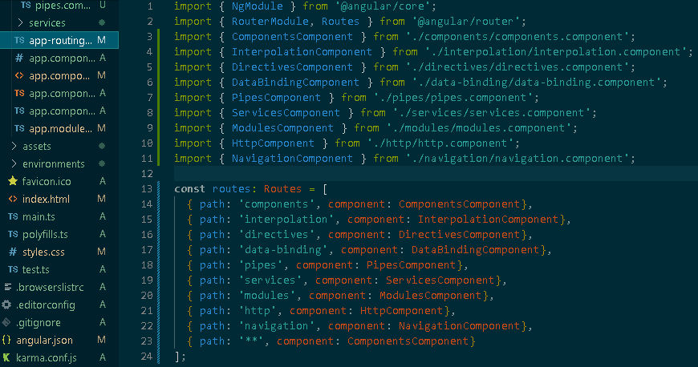
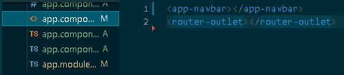
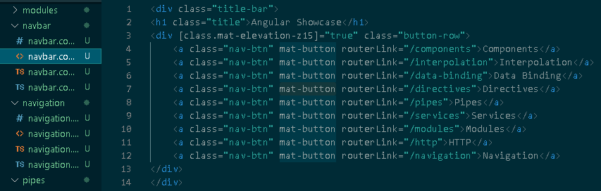

While other websites may use hyper links to navigate between multiple pages, Angular uses Routing to display different components on the same template.
Angular Routing is accomplished with three ingredients:
- The app-routing module
- The router outlet
- The router Links
For this topic, the navigation bar will be used as an example:
app-routing Module
hub for routes

The app-routing module is where you list all the navigation paths for your Angular application. Simply import the components and specify their path in the routes list. You can also include a default path, which redirects a user from an unexpected path. (Be sure to include this path last as the routes are checked in order during runtime)
Router Outlet
Output point for components

The router outlet is a tag included in the app.component.html page that tells the angular application where to put the components called upon by the path. For this application we include the navbar first so that it's present on every route, then the router outlet allows the components to be rendered below.
Router Link
Angular Link

The router link directive is used navigate to the different paths specified in the app-routing module. You can include these anywhere in the application.